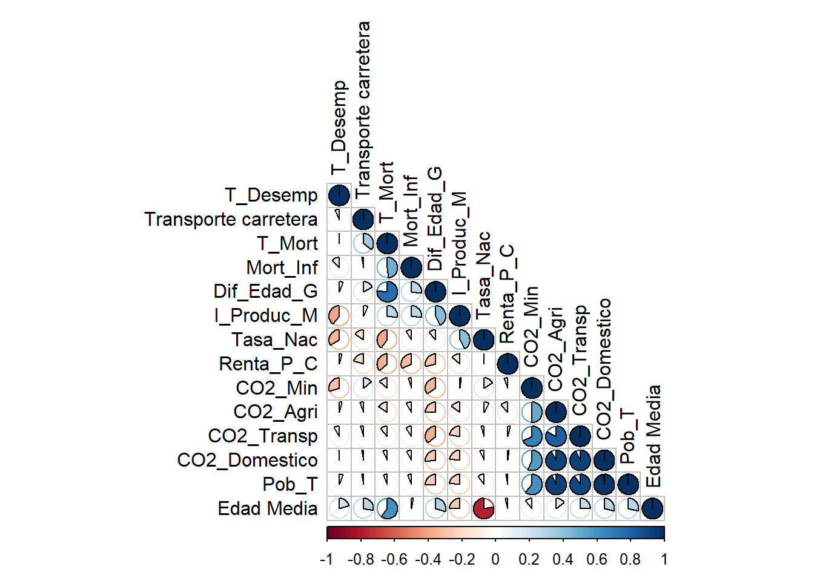
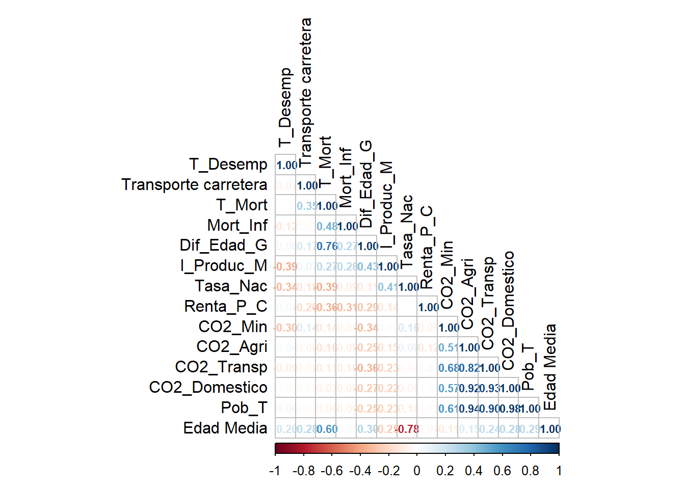
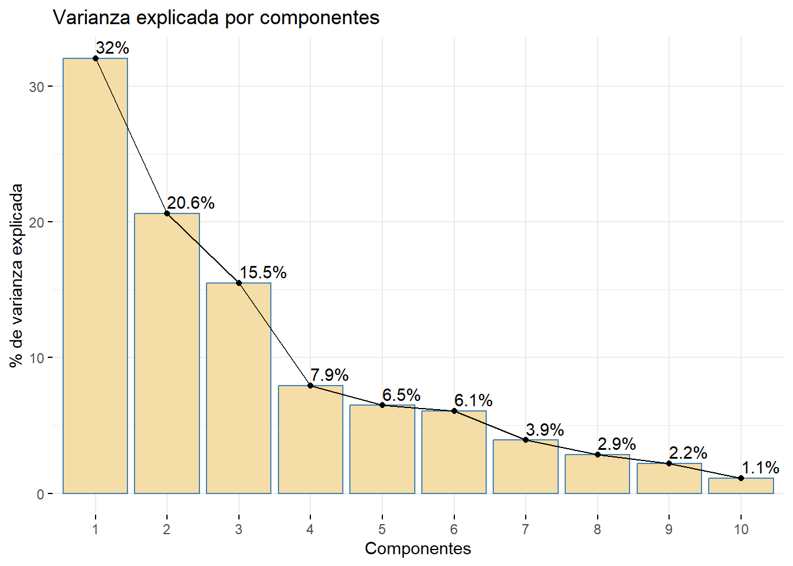
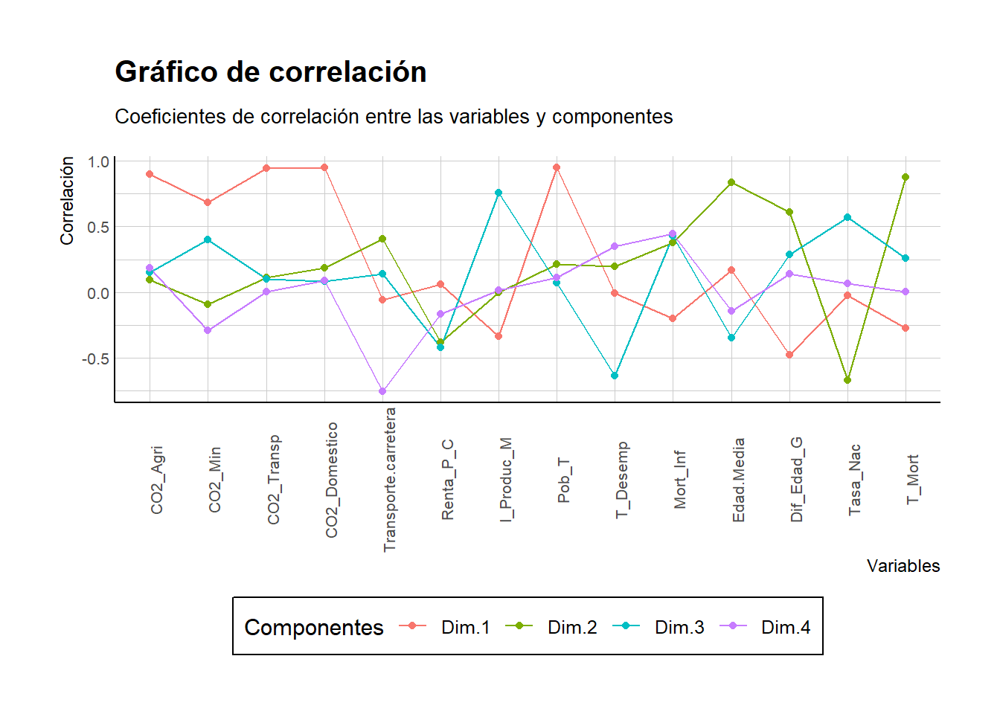
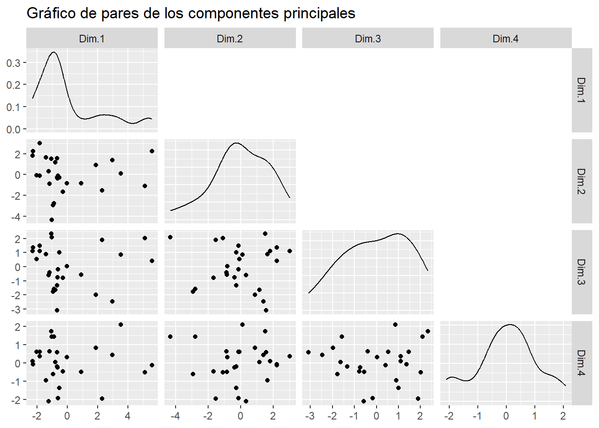
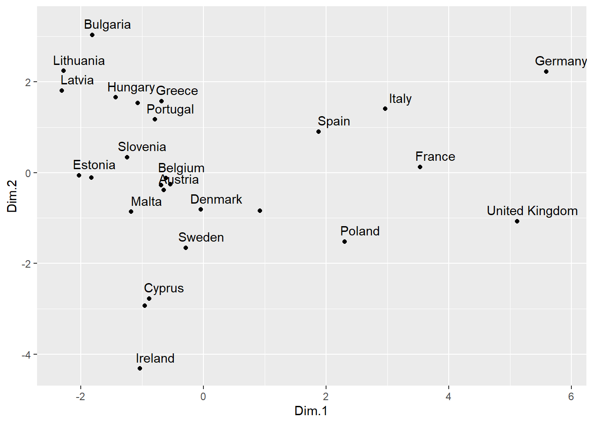
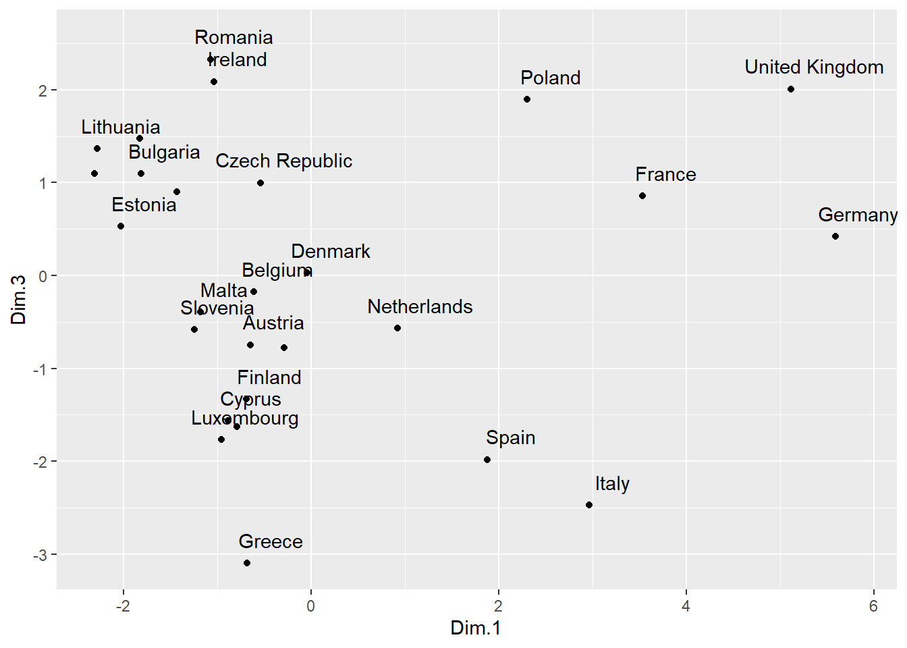
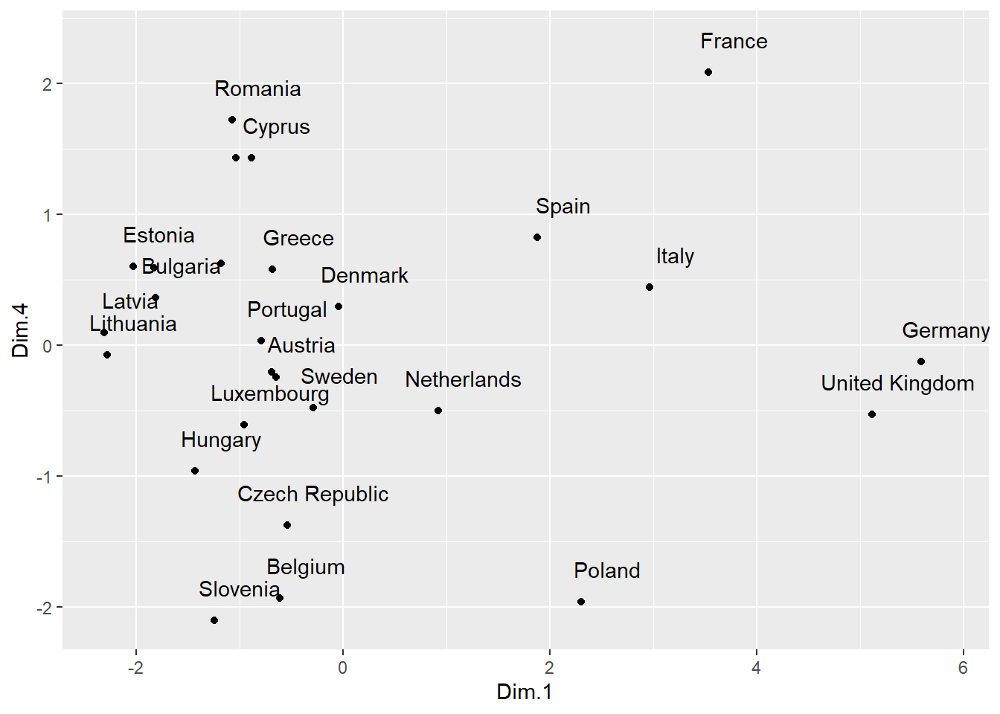

rm(list = ls())
# Manejo de datos
library(tidyverse)
# Importar Excel
library(readxl)
# Recopilarción de temas, escalas y utilidades adicionales de ggplot2
library(hrbrthemes)
# Mostrar tablas en HTML (datatable)
library(DT)
# Combinar gráficos
library(gridExtra)
# PCA
library(FactoMineR)
library(factoextra)
# Correlacion
library(corrplot)
# Modelos
library(tidymodels)
# Para grafico de Correlacion CP vs X
library(hrbrthemes)
library(GGally)
library(viridis)Practica PCA
Principal Component Analysis
Librerías necesarias:
Ejercicio 1
El conjunto de datos
euro_contamestá compuesto por 14 variables de carácter socio económico y relacionadas con las emisiones de CO2 para 27 países de la Unión Europea (observaciones). Para reducir el número de variables e intentar encontrar relaciones, tanto entre variables como entre países, realizar los siguientes apartados.
- Realizar un análisis de componentes principales sobre la matriz de correlaciones.
- Obtén los autovalores y autovectores
- ¿Con cuantas componentes nos quedaríamos? (al menos un 75% de la varianza total explicada)
En primer lugar se van a visualizar en una tabla los datos del dataset obtenido a partir del excel
euro_contam <- read_excel("./data/euro_contam.xlsx")
euro_contam_tibble <- as_tibble(euro_contam)
datatable(euro_contam_tibble , rownames = FALSE, filter = "top",
options = list(pageLength = 10)) |>
formatStyle(names(euro_contam_tibble), lineHeight = "100%")Como podemos observar existen variables que no aportan información numérica relevante para el análisis de componentes principales, estas son el ID y el País.
Se van a estandarizar los datos pero sin tener en cuenta estas variables. Aun así se va a conservar en los datos resultantes el nombre del país por su posible utilidad en visualizaciones de datos posteriores.
euro_contam_std <- tibble("País" = euro_contam_tibble$Pais,
as_tibble(scale(euro_contam_tibble[, 3:16])))Con los datos estandarizados y sin tener en cuenta la variable del nombre del país se puede efectuar el calculo de la matriz de correlación
euro_cont_cor_mat <- cor(euro_contam_std[, 2:15])
euro_cont_cor_mat CO2_Agri CO2_Min CO2_Transp CO2_Domestico
CO2_Agri 1.00000000 0.50687088 0.82278120 0.92006954
CO2_Min 0.50687088 1.00000000 0.67617014 0.56857052
CO2_Transp 0.82278120 0.67617014 1.00000000 0.92521343
CO2_Domestico 0.92006954 0.56857052 0.92521343 1.00000000
Transporte carretera -0.05584559 0.14222970 -0.04721270 -0.02576384
Renta_P_C -0.12033077 -0.06087046 0.03326792 0.01188540
I_Produc_M -0.15067792 0.02002981 -0.22863437 -0.22366022
Pob_T 0.93558606 0.60945669 0.90110880 0.97828515
T_Desemp 0.03623525 -0.29642777 -0.09113631 -0.01192912
Mort_Inf -0.08766904 -0.05088270 -0.09514763 -0.07756468
Edad Media 0.14681507 -0.11217850 0.24321119 0.28342732
Dif_Edad_G -0.25491163 -0.33728979 -0.35756941 -0.26585256
Tasa_Nac 0.08732641 0.16256544 -0.04166154 -0.06099518
T_Mort -0.16417877 -0.13883334 -0.11161370 -0.07112138
Transporte carretera Renta_P_C I_Produc_M Pob_T
CO2_Agri -0.05584559 -0.120330766 -0.15067792 0.93558606
CO2_Min 0.14222970 -0.060870463 0.02002981 0.60945669
CO2_Transp -0.04721270 0.033267921 -0.22863437 0.90110880
CO2_Domestico -0.02576384 0.011885399 -0.22366022 0.97828515
Transporte carretera 1.00000000 -0.195848354 0.07109203 -0.02445493
Renta_P_C -0.19584835 1.000000000 -0.13961936 -0.02793889
I_Produc_M 0.07109203 -0.139619358 1.00000000 -0.23273203
Pob_T -0.02445493 -0.027938892 -0.23273203 1.00000000
T_Desemp -0.06825856 0.043439076 -0.39385773 0.05940668
Mort_Inf -0.02852768 -0.311987334 0.27606050 -0.06413991
Edad Media 0.27784364 -0.041845905 -0.25239394 0.28553292
Dif_Edad_G 0.17057331 -0.287036907 0.43461159 -0.25271031
Tasa_Nac -0.14983226 0.002804892 0.41408185 -0.09975510
T_Mort 0.35013021 -0.356835518 0.27406145 -0.06225065
T_Desemp Mort_Inf Edad Media Dif_Edad_G
CO2_Agri 0.036235253 -0.08766904 0.14681507 -0.25491163
CO2_Min -0.296427772 -0.05088270 -0.11217850 -0.33728979
CO2_Transp -0.091136310 -0.09514763 0.24321119 -0.35756941
CO2_Domestico -0.011929125 -0.07756468 0.28342732 -0.26585256
Transporte carretera -0.068258561 -0.02852768 0.27784364 0.17057331
Renta_P_C 0.043439076 -0.31198733 -0.04184591 -0.28703691
I_Produc_M -0.393857733 0.27606050 -0.25239394 0.43461159
Pob_T 0.059406682 -0.06413991 0.28553292 -0.25271031
T_Desemp 1.000000000 -0.12253166 0.20080141 0.05802481
Mort_Inf -0.122531662 1.00000000 0.02572380 0.27143188
Edad Media 0.200801411 0.02572380 1.00000000 0.30049420
Dif_Edad_G 0.058024815 0.27143188 0.30049420 1.00000000
Tasa_Nac -0.336770259 -0.09279241 -0.77687333 -0.11313991
T_Mort -0.006580283 0.48005004 0.60431291 0.76453543
Tasa_Nac T_Mort
CO2_Agri 0.087326409 -0.164178773
CO2_Min 0.162565436 -0.138833343
CO2_Transp -0.041661543 -0.111613702
CO2_Domestico -0.060995180 -0.071121377
Transporte carretera -0.149832258 0.350130212
Renta_P_C 0.002804892 -0.356835518
I_Produc_M 0.414081845 0.274061450
Pob_T -0.099755096 -0.062250654
T_Desemp -0.336770259 -0.006580283
Mort_Inf -0.092792413 0.480050040
Edad Media -0.776873328 0.604312914
Dif_Edad_G -0.113139914 0.764535432
Tasa_Nac 1.000000000 -0.388930303
T_Mort -0.388930303 1.000000000🎂🎂 Aquí se pueden visualizar las correlaciones de las diferentes variables 🎂🎂:
corrplot(euro_cont_cor_mat,
type = 'lower',
method = 'pie',
order = 'AOE',
tl.col = "black")
Ahora de verdad…
corrplot(type = 'lower',
number.cex = 0.7,
method = 'number',
euro_cont_cor_mat,
order = 'AOE',
tl.col = "black")
Una vez obtenida la matriz de correlación se pueden realizar los calculos de autovalores y autovectores. Para ello en primer lugar aplicaremos el PCA a los datos estandarizados y visualizaremos los Autovalores:
pca_fit <- PCA(euro_contam_std[, 2:15], scale.unit = TRUE, ncp = 14, graph = FALSE)
pca_fit$eig eigenvalue percentage of variance cumulative percentage of variance
comp 1 4.48688266 32.04916188 32.04916
comp 2 2.88426438 20.60188843 52.65105
comp 3 2.16722422 15.48017300 68.13122
comp 4 1.11136143 7.93829591 76.06952
comp 5 0.90641690 6.47440645 82.54393
comp 6 0.84757730 6.05412360 88.59805
comp 7 0.54816738 3.91548132 92.51353
comp 8 0.40127965 2.86628320 95.37981
comp 9 0.30685114 2.19179387 97.57161
comp 10 0.15454002 1.10385727 98.67546
comp 11 0.08638644 0.61704602 99.29251
comp 12 0.06130245 0.43787468 99.73039
comp 13 0.02968771 0.21205509 99.94244
comp 14 0.00805830 0.05755929 100.00000Cada autovalor que se ha calculado indica la cantidad de varianza total que es capturada por su componente principal correspondiente. Para verlo de forma más clara se calcula la siguiente gráfica:
fviz_eig(pca_fit,
addlabels = TRUE,
barfill = "#f4dda7",
xlab = "Componentes",
ylab = "% de varianza explicada",
main = "Varianza explicada por componentes")
Con este gráfico se podría visualizar también cuantos componentes surgen cumpliendo con el requisito del 75% de la varianza total explicada. Con 4 componentes alcanzamos un 76.06% de varianza total explicada por lo que escogeremos los primeros 4 componentes.
Observamos el peso de las variables originales en los 4 nuevos componentes principales.
pca_fit$var$coord[, 1:4] Dim.1 Dim.2 Dim.3 Dim.4
CO2_Agri 0.902146449 0.09288297 0.15332566 0.186088052
CO2_Min 0.685206986 -0.09076004 0.39807034 -0.290400784
CO2_Transp 0.943983345 0.11003625 0.10189857 0.002582472
CO2_Domestico 0.951002110 0.18547151 0.08369392 0.086480927
Transporte carretera -0.058325191 0.40366524 0.14095022 -0.759071312
Renta_P_C 0.062175173 -0.38106551 -0.42301375 -0.169815496
I_Produc_M -0.337069222 -0.00293899 0.75862895 0.013268906
Pob_T 0.952992141 0.21106901 0.06958922 0.110923534
T_Desemp -0.008936825 0.19376169 -0.63864224 0.351640802
Mort_Inf -0.202281046 0.37711053 0.42942282 0.444934097
Edad Media 0.169858154 0.83581633 -0.34856607 -0.145556796
Dif_Edad_G -0.481729677 0.61112019 0.28587048 0.141666113
Tasa_Nac -0.023234297 -0.67153080 0.57109934 0.067265406
T_Mort -0.276525606 0.87487737 0.25895321 0.003076896Para el calculo de los autovectores se utiliza también la aplicación del PCA a nuestros datos estandarizados que nos generará un objeto donde encontraremos los autovectores:
original_vars <- names(euro_contam_std[2:15])
auto_vec <- tibble(original_vars, as_tibble(pca_fit$svd$V[, 1:4]))
auto_vec# A tibble: 14 × 5
original_vars V1 V2 V3 V4
<chr> <dbl> <dbl> <dbl> <dbl>
1 CO2_Agri 0.426 0.0547 0.104 0.177
2 CO2_Min 0.323 -0.0534 0.270 -0.275
3 CO2_Transp 0.446 0.0648 0.0692 0.00245
4 CO2_Domestico 0.449 0.109 0.0569 0.0820
5 Transporte carretera -0.0275 0.238 0.0957 -0.720
6 Renta_P_C 0.0294 -0.224 -0.287 -0.161
7 I_Produc_M -0.159 -0.00173 0.515 0.0126
8 Pob_T 0.450 0.124 0.0473 0.105
9 T_Desemp -0.00422 0.114 -0.434 0.334
10 Mort_Inf -0.0955 0.222 0.292 0.422
11 Edad Media 0.0802 0.492 -0.237 -0.138
12 Dif_Edad_G -0.227 0.360 0.194 0.134
13 Tasa_Nac -0.0110 -0.395 0.388 0.0638
14 T_Mort -0.131 0.515 0.176 0.00292Por tanto los 4 nuevos componentes quedan expresados de la siguiente forma:
\[ \begin{multline*} \Phi_{1} = 0.425897105 \times \text{CO2\_Agri} + 0.323481483 \times \text{CO2\_Min}\\ + 0.445648014 \times \text{CO2\_Transp} + 0.448961525 \times \text{CO2\_Domestico}\\ - 0.027534920 \times \text{Transporte carretera} + 0.029352470 \times \text{Renta\_P\_C}\\ - 0.159128051 \times \text{I\_Produc\_M} + 0.449901004 \times \text{Pob\_T}\\ - 0.004219013 \times \text{T\_Desemp} - 0.095495484 \times \text{Mort\_Inf}\\ + 0.080188861 \times \text{Edad Media} - 0.227421252 \times \text{Dif\_Edad\_G}\\ - 0.010968751 \times \text{Tasa\_Nac} - 0.130545828 \times \text{T\_Mort} \end{multline*} \]
\[ \begin{multline*} \Phi_{2} = 0.054691339 \times \text{CO2\_Agri} - 0.053441318 \times \text{CO2\_Min}\\ + 0.064791530 \times \text{CO2\_Transp} + 0.109209310 \times \text{CO2\_Domestico}\\ + 0.237686119 \times \text{Transporte carretera} - 0.224378950 \times \text{Renta\_P\_C}\\ - 0.001730536 \times \text{I\_Produc\_M} + 0.124281631 \times \text{Pob\_T}\\ + 0.114090735 \times \text{T\_Desemp} + 0.222050177 \times \text{Mort\_Inf}\\ + 0.492145271 \times \text{Edad Media} + 0.359839721 \times \text{Dif\_Edad\_G}\\ - 0.395410684 \times \text{Tasa\_Nac} + 0.515145188 \times \text{T\_Mort} \end{multline*} \]
\[ \begin{multline*} \Phi_{3} = 0.10415088 \times \text{CO2\_Agri} + 0.27040075 \times \text{CO2\_Min}\\ + 0.06921754 \times \text{CO2\_Transp} + 0.05685151 \times \text{CO2\_Domestico}\\ + 0.09574450 \times \text{Transporte carretera} - 0.28734428 \times \text{Renta\_P\_C}\\ + 0.51532058 \times \text{I\_Produc\_M} + 0.04727048 \times \text{Pob\_T}\\ - 0.43381615 \times \text{T\_Desemp} + 0.29169783 \times \text{Mort\_Inf}\\ - 0.23677355 \times \text{Edad Media} + 0.19418577 \times \text{Dif\_Edad\_G}\\ + 0.38793569 \times \text{Tasa\_Nac} + 0.17590143 \times \text{T\_Mort} \end{multline*} \]
\[ \begin{multline*} \Phi_{4} = 0.176518745 \times \text{CO2\_Agri} - 0.275467346 \times \text{CO2\_Min}\\ + 0.002449672 \times \text{CO2\_Transp} + 0.082033771 \times \text{CO2\_Domestico}\\ - 0.720037174 \times \text{Transporte carretera} - 0.161082981 \times \text{Renta\_P\_C}\\ + 0.012586572 \times \text{I\_Produc\_M} + 0.105219452 \times \text{Pob\_T}\\ + 0.333558185 \times \text{T\_Desemp} + 0.422054008 \times \text{Mort\_Inf}\\ - 0.138071749 \times \text{Edad Media} + 0.134381139 \times \text{Dif\_Edad\_G}\\ + 0.063806381 \times \text{Tasa\_Nac} + 0.002918671 \times \text{T\_Mort} \end{multline*} \]
Para asegurarnos de que hemos realizado los cálculos de forma correcta
Los nuevos componentes obtenidos a partir del PCA tienen que cumplir unas condiciones. En primer lugar, deben de tener media 0:
apply(pca_fit$ind$coord[,1:4], MARGIN = 2, mean) Dim.1 Dim.2 Dim.3 Dim.4
7.780556e-17 8.483280e-17 9.200459e-17 -6.655395e-17 Y además su varianza tiene que ser igual a los autovalores calculados previamente.
apply(pca_fit$ind$coord[,1:4], MARGIN = 2, function(x) { mean(x^2) - mean(x)^2}) Dim.1 Dim.2 Dim.3 Dim.4
4.486883 2.884264 2.167224 1.111361 head(pca_fit$eig, 4) eigenvalue percentage of variance cumulative percentage of variance
comp 1 4.486883 32.049162 32.04916
comp 2 2.884264 20.601888 52.65105
comp 3 2.167224 15.480173 68.13122
comp 4 1.111361 7.938296 76.06952Ejercicio 2
Hacer de nuevo el análisis, pero ahora indicando el número de componentes principales que hemos decidido retener. Sobre este análisis contestar los siguientes apartados.
- ¿Cómo se calculan las Componentes (expresa las ecuaciones)?
- ¿Con que variables está más correlada la segunda componente?
- ¿Qué más puedes decir sobre las componentes y variables originales? ¿alguna relación?
A raíz del primer analisis indicando 14 componentes,se realizará uno nuevo pero con 4 componentes que son los que cubren más del 75% de la varianza total explicada.
pca_fit <- PCA(euro_contam_std[, 2:15], scale.unit = TRUE, ncp = 4, graph = FALSE)
head(pca_fit$eig, 4) eigenvalue percentage of variance cumulative percentage of variance
comp 1 4.486883 32.049162 32.04916
comp 2 2.884264 20.601888 52.65105
comp 3 2.167224 15.480173 68.13122
comp 4 1.111361 7.938296 76.06952Una vez realizado el análisis de componentes principales, los autovectores obtenidos representan las combinaciones lineales de las variables originales que definen cada componente. Estos autovectores pueden visualizarse para comprender cómo se construyen los componentes y saber el peso de cada variable en los distintos componentes.
original_vars <- names(euro_contam_std[2:15])
auto_vec <- tibble(original_vars, as_tibble(pca_fit$svd$V[, 1:4]))
auto_vec# A tibble: 14 × 5
original_vars V1 V2 V3 V4
<chr> <dbl> <dbl> <dbl> <dbl>
1 CO2_Agri 0.426 0.0547 0.104 0.177
2 CO2_Min 0.323 -0.0534 0.270 -0.275
3 CO2_Transp 0.446 0.0648 0.0692 0.00245
4 CO2_Domestico 0.449 0.109 0.0569 0.0820
5 Transporte carretera -0.0275 0.238 0.0957 -0.720
6 Renta_P_C 0.0294 -0.224 -0.287 -0.161
7 I_Produc_M -0.159 -0.00173 0.515 0.0126
8 Pob_T 0.450 0.124 0.0473 0.105
9 T_Desemp -0.00422 0.114 -0.434 0.334
10 Mort_Inf -0.0955 0.222 0.292 0.422
11 Edad Media 0.0802 0.492 -0.237 -0.138
12 Dif_Edad_G -0.227 0.360 0.194 0.134
13 Tasa_Nac -0.0110 -0.395 0.388 0.0638
14 T_Mort -0.131 0.515 0.176 0.00292Por tanto las ecuaciones de los distintos componentes son las siguientes:
\[ \begin{multline*} \Phi_{1} = 0.425897105 \times \text{CO2\_Agri} + 0.323481483 \times \text{CO2\_Min}\\ + 0.445648014 \times \text{CO2\_Transp} + 0.448961525 \times \text{CO2\_Domestico}\\ - 0.027534920 \times \text{Transporte carretera} + 0.029352470 \times \text{Renta\_P\_C}\\ - 0.159128051 \times \text{I\_Produc\_M} + 0.449901004 \times \text{Pob\_T}\\ - 0.004219013 \times \text{T\_Desemp} - 0.095495484 \times \text{Mort\_Inf}\\ + 0.080188861 \times \text{Edad Media} - 0.227421252 \times \text{Dif\_Edad\_G}\\ - 0.010968751 \times \text{Tasa\_Nac} - 0.130545828 \times \text{T\_Mort} \end{multline*} \]
\[ \begin{multline*} \Phi_{2} = 0.054691339 \times \text{CO2\_Agri} - 0.053441318 \times \text{CO2\_Min}\\ + 0.064791530 \times \text{CO2\_Transp} + 0.109209310 \times \text{CO2\_Domestico}\\ + 0.237686119 \times \text{Transporte carretera} - 0.224378950 \times \text{Renta\_P\_C}\\ - 0.001730536 \times \text{I\_Produc\_M} + 0.124281631 \times \text{Pob\_T}\\ + 0.114090735 \times \text{T\_Desemp} + 0.222050177 \times \text{Mort\_Inf}\\ + 0.492145271 \times \text{Edad Media} + 0.359839721 \times \text{Dif\_Edad\_G}\\ - 0.395410684 \times \text{Tasa\_Nac} + 0.515145188 \times \text{T\_Mort} \end{multline*} \]
\[ \begin{multline*} \Phi_{3} = 0.10415088 \times \text{CO2\_Agri} + 0.27040075 \times \text{CO2\_Min}\\ + 0.06921754 \times \text{CO2\_Transp} + 0.05685151 \times \text{CO2\_Domestico}\\ + 0.09574450 \times \text{Transporte carretera} - 0.28734428 \times \text{Renta\_P\_C}\\ + 0.51532058 \times \text{I\_Produc\_M} + 0.04727048 \times \text{Pob\_T}\\ - 0.43381615 \times \text{T\_Desemp} + 0.29169783 \times \text{Mort\_Inf}\\ - 0.23677355 \times \text{Edad Media} + 0.19418577 \times \text{Dif\_Edad\_G}\\ + 0.38793569 \times \text{Tasa\_Nac} + 0.17590143 \times \text{T\_Mort} \end{multline*} \]
\[ \begin{multline*} \Phi_{4} = 0.176518745 \times \text{CO2\_Agri} - 0.275467346 \times \text{CO2\_Min}\\ + 0.002449672 \times \text{CO2\_Transp} + 0.082033771 \times \text{CO2\_Domestico}\\ - 0.720037174 \times \text{Transporte carretera} - 0.161082981 \times \text{Renta\_P\_C}\\ + 0.012586572 \times \text{I\_Produc\_M} + 0.105219452 \times \text{Pob\_T}\\ + 0.333558185 \times \text{T\_Desemp} + 0.422054008 \times \text{Mort\_Inf}\\ - 0.138071749 \times \text{Edad Media} + 0.134381139 \times \text{Dif\_Edad\_G}\\ + 0.063806381 \times \text{Tasa\_Nac} + 0.002918671 \times \text{T\_Mort} \end{multline*} \] Para saber con que variable está más correlada la segunda componente se va a visualizar el gráfico de correlación entre las variables originales y los nuevos componentes que han surgido a partir del PCA y nos vamos a centrar en el segundo componente.
Code
comp_corr_data <- data.frame(t(pca_fit$var$coord))
comp_corr_data <- comp_corr_data |>
mutate(Componentes = as.factor(rownames(comp_corr_data))) |>
filter(Componentes %in% c("Dim.1","Dim.2","Dim.3","Dim.4"))
ggparcoord(comp_corr_data,
columns = 1:(ncol(comp_corr_data)-1),
groupColumn = "Componentes",
scale = "globalminmax",
showPoints = TRUE) +
labs(title = "Gráfico de correlación",
subtitle = "Coeficientes de correlación entre las variables y componentes",
x = "Variables",
y = "Correlación")+
theme_ipsum()+
theme(plot.title = element_text(size=15),
plot.subtitle = element_text(size=10),
axis.line = element_line(color="black"),
axis.text.x = element_text(size = 8, angle = 90),
axis.text.y = element_text(size = 8),
legend.position = "bottom",
legend.background = element_rect(color = "black",
fill = "white",
linewidth = 0.5,
linetype = "solid"))
Podemos observar que la segunda componente está fuertemente relacionada de forma positiva con la Edad_Media, Dif_Edad_G y con la T_Mort, mientras que de manera inversa, está muy relacionada con la Tasa_Nac.
Por lo tanto podemos deducir que esta segunda componente representa la edad de la población, la diferencia de edad entre hombres y mujeres y la tasa de mortalidad. También se relaciona con la natalidad de forma inversa.
En cuanto al resto de componentes y su relación con las variables originales:
La primera componente está fuertemente relacionada de forma positiva con las variables CO2_Agri, CO2_Min, CO2_Transp, CO2_Domestico y Pob_T por tanto podemos deducir que representa la relación entre las emisiones de C02 y la población de los países.
La tercera componente tiene una fuerte relación positiva con I_Product_M y Tasa_Nac e inversa con T_Desempleo por lo que representa la relación entre la producción de la industria y la tasa de desempleo en el país que además refleja una fuerte relación de estas dos variables con la natalidad.
La cuarta componente únicamente destaca en una correlación negativa con la variable de Transporte carretera que representa la información de forma inversa del transporte por este medio.
Visualizamos la relación de los nuevos componentes del PCA con los distintos países
scores <- tibble("País" = euro_contam_std$País,as_tibble(pca_fit$ind$coord[,1:4]))
datatable(scores , rownames = FALSE, filter = "top",
options = list(pageLength = 10)) |>
formatStyle(names(scores))ggpairs(scores[, c("Dim.1", "Dim.2", "Dim.3", "Dim.4")],
upper = list(continuous = "blank")) +
ggtitle("Gráfico de pares de los componentes principales")
Para mostrar y explicar en detalle la relación entre las variables originales y los nuevos componentes se va a poner de ejemplo la primera componente.
En cuanto a la primera componente
En este primer gráfico donde se relaciona el primer componente con el segundo se muestra una distribución de los países basada en estas dos componentes. Los países como Bulgaria, Lituania, Letonia se encuentran en la parte superior y a la izquierda, indicando que tienen poblaciones más pequeñas con tasas de natalidad más altas. Mientras que países como Francia, Italia, Alemania, España están ubicados en la parte central o derecha, lo que indica mayores emisiones de CO2 y poblaciones más grandes.
Code
scores <- tibble("País" = euro_contam_std$País,as_tibble(pca_fit$ind$coord[,1:2]))
ggplot(scores, aes(x=Dim.1, y=Dim.2)) +
geom_point() +
geom_text(
label=scores$País,
nudge_x = 0.25,
nudge_y = 0.25,
check_overlap = TRUE
)
Siguiendo la explicación del primer gráfico, en este segundo se relaciona el tercer componente con el primero. Los países como Francia, Italia, Alemania, España mencionados anteriormente se ubican en la parte de la derecha indicando mayores emisiones y poblaciones más grandes.Además se refleja como existe una relación entre la producción industrial, natalidad y el desempleo, ya que los países con mayor producción industrial y natalidad también tienden a mostrar un desempleo relativamente bajo, mientras que aquellos con menor producción industrial y natalidad más baja, presentan tasas de desempleo más altas.
Code
scores <- tibble("País" = euro_contam_std$País,as_tibble(pca_fit$ind$coord[,c(1, 3)]))
ggplot(scores, aes(x=Dim.1, y=Dim.3)) +
geom_point() +
geom_text(
label=scores$País,
nudge_x = 0.25,
nudge_y = 0.25,
check_overlap = TRUE
)
En esta última gráfica se establece una relación de las emisiones de C02 y la población con la dependencia del transporte por carretera. Países como Reino Unido y Alemania están en un extremo alto en la primera componente y valores intermedios en la cuarta componente, lo que indica una altas emisiones de C02 y mayor población pero una menor dependencia del transporte por carretera.
Por ejemplo Polonia y Eslovenia tienen valores negativos en la cuarta componente y más bajos en la primera, lo que indica una dependencia mayor del transporte por carretera y emisiones más bajas
Code
scores <- tibble("País" = euro_contam_std$País,as_tibble(pca_fit$ind$coord[,c(1, 4)]))
ggplot(scores, aes(x=Dim.1, y=Dim.4)) +
geom_point() +
geom_text(
label=scores$País,
nudge_x = 0.25,
nudge_y = 0.25,
check_overlap = TRUE
)